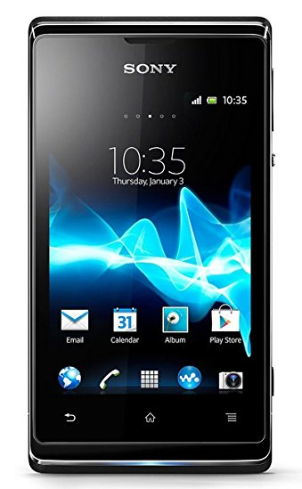

Sony Xperia E Dual (sony-nanhu)
|
 Sony Xperia E Dual | |
| Manufacturer | Sony |
|---|---|
| Name | Xperia E Dual |
| Codename | sony-nanhu |
| Released | 2013 |
| Category | testing |
| Original software | Android 4.0.4 on Linux 3.0.1 |
| Hardware | |
| Chipset | Qualcomm Snapdragon S1 (MSM7227A) |
| CPU | 1.0 GHz Cortex-A5 |
| GPU | Adreno 200 |
| Display | 320x480 IPS |
| Storage | 4 GB |
| Memory | 512 MB |
| Architecture | armv7 |
{kind=link}
| USB Networking | |
|---|---|
| Flashing | |
| Touchscreen | |
| Display | |
| WiFi | |
| FDE | |
| Mainline | |
| Battery | |
| 3D Acceleration | |
| Audio | |
| Bluetooth | |
| Camera | |
| GPS | |
| Mobile data | |
| SMS | |
| Calls | |
| USB OTG / USB-C Role switching | |
| NFC | |
| Accelerometer | |
|---|---|
| Magnetometer | |
| Ambient Light | |
| Proximity | |
| Hall Effect | |
| Barometer | |
| Power Sensor | |
| Camera Flash | |
|---|---|
| Keyboard | |
| Touchpad | |
| USB-A | |
| HDMI/DP | |
| Ir TX | |
| Ir RX | |
| Stylus | |
| Haptics | |
| Ethernet | |
| FOSS bootloader | |
Contents
Contributors
- Nicknack
What works
- Compiling the kernel
What does not work
- Flashing, there are problems with Sony's boot image format
The built kernel boots with a black screen and no further sign of acitivity. Fastboot flashes without errors but flash offsets are probably wrong. Only known working kernels have a different ELF file format.
Boot image format
There is one tool avaiable for unpacking Sony's ELF boot format into the normal ANDROID format:
libbootimg
Sadly, even unpacking and repacking a working prebuilt kernel doesn't seem to work.
I had more luck with mkelf.py script from Sony. You can loosely follow the tutorial here. This time unpacking a working kernel elf image and repacking it with mkefl.py worked. Needed to change only a few bits with vbindiff. Now we only need to find a working set of offsets and image parts to do the same with a custom kernel!
Here are some links describing the problem with Sony's boot format:
- https://github.com/chenxiaolong/DualBootPatcher/issues/181
- https://github.com/Tasssadar/libbootimg/pull/2/commits/8986984b5d618be0b753e55d6b9d9d1744bc4094
- https://books.google.de/books?id=2qo6AwAAQBAJ&pg=PA313&lpg=PA313&dq=sony+boot.img+format&source=bl&ots=0mtMMle9eZ&sig=adCVtfarXK9cticvd5qqYA6g39Y&hl=de&sa=X&ved=0ahUKEwjgp5mfx5XVAhUHWRQKHWSeDZcQ6AEIQzAB#v=onepage&q&f=false
Next possible steps
- Try booting pmOS with a prebuilt kernel.
- Try repacking built kernel into ELF format
- UART debugging?